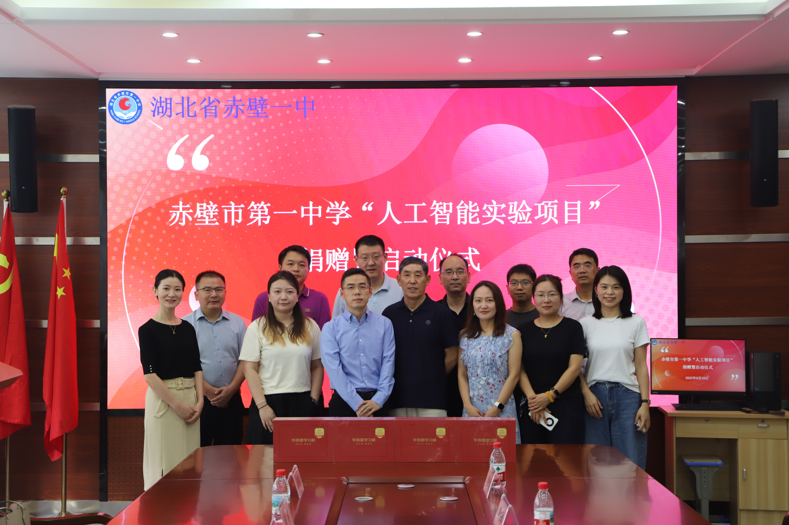
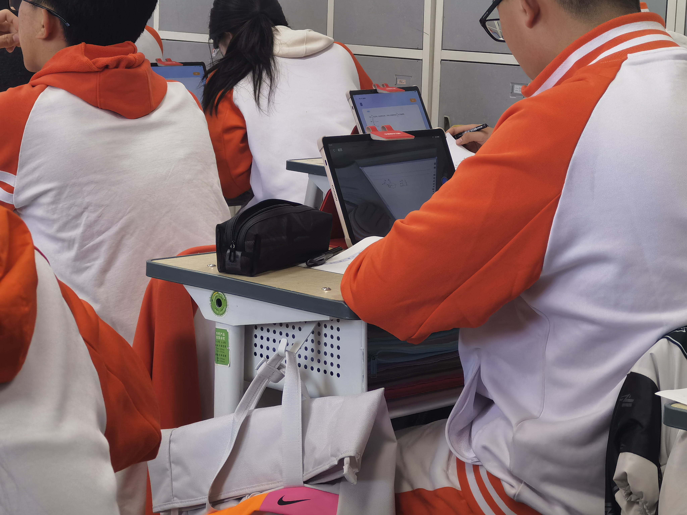
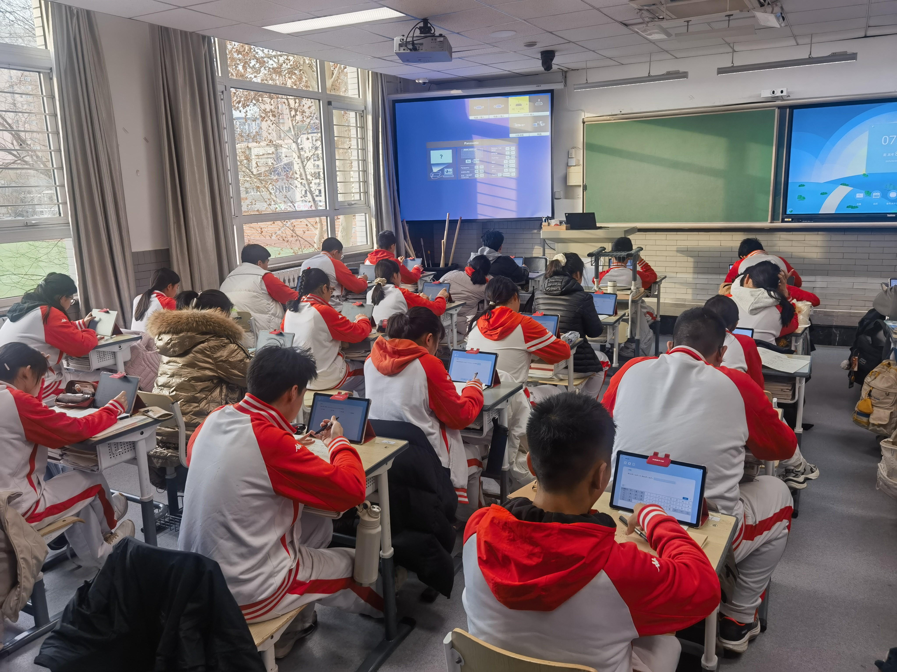

打磨现有能力
持续打磨现有AI能力，提升准确率和响应速度
核心战绩数据
10+
覆盖学校
100+
服务教师
1200+
活跃学生
80%
周活跃率
100%
续班率
2025天津教育装备展
镇江学校新闻报道


赤壁一中捐赠仪式
三校试点：验证价值回归路径
🏫 镇江学校 · 常态化使用
旧：手批讲解低效 → 新：AI批改+答疑+靶向练，精准狙击
🏫 仁北中学 · 分层教学练
旧：教学练难分层 → 新：选填限时练+强化小组，数据驱动
🏫 二十中 · 数学公开课
旧：PPT讲授型课堂 → 新：小程序互动+实时检测，主动探索
镇江学校课堂实景
仁北强化小组课



北京二十中公开课
建立完善交付反馈机制
📚 交付培训
亲自完成10+场培训、100+教师覆盖，沉淀总结典型案例和QA，建立售后知识库，交付运营自运转
🔄 反馈闭环
问题反馈模版@机器人记录 → 测试owner定位 → 知途工单分配研发产品解决跟进 → 运营周报统计解决情况
📊 调研追踪
全员去一线田野调研、搭建分析看板追踪师生行为和效果数据、学期维度成绩分析和问卷反馈


教师培训现场
学生培训现场
反馈沟通渠道